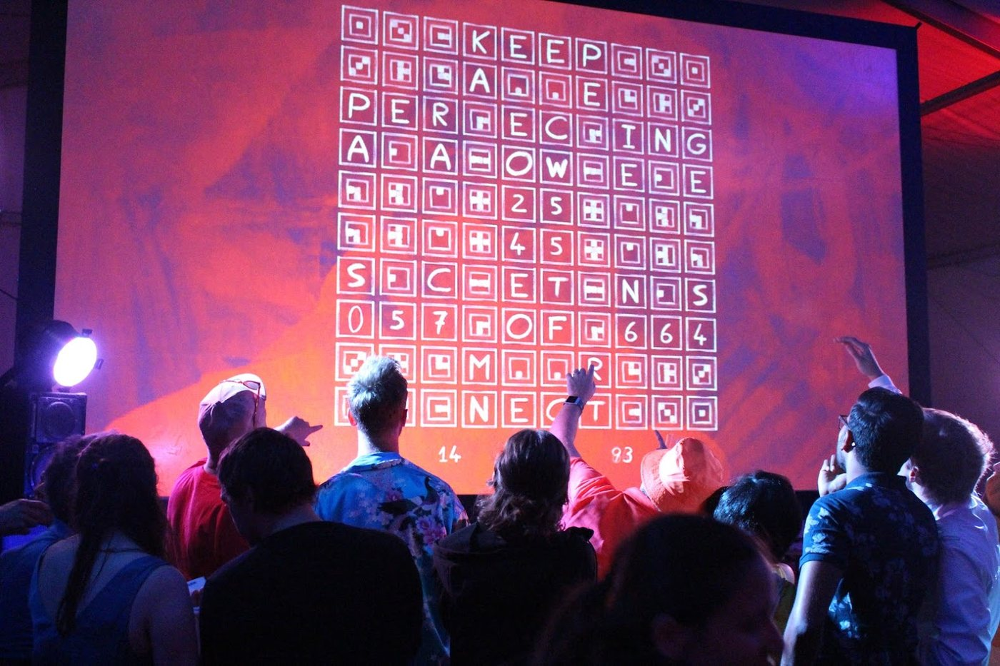
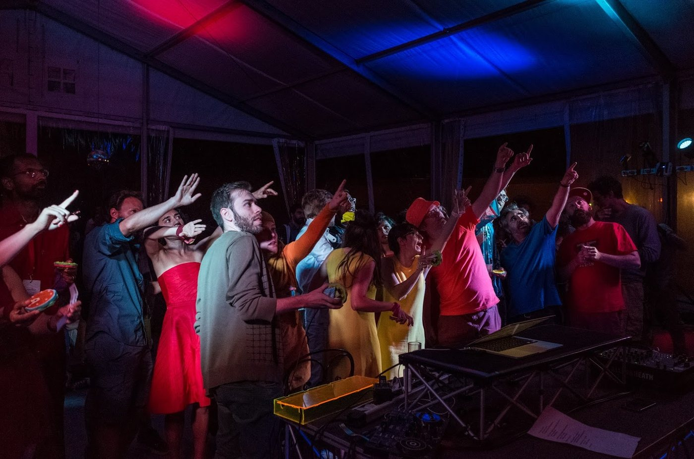

How do you take a divided, competitive group of people and get them to cooperate, without ever telling them that this is the point?
KTools for polarisation
In the summer of 2018 I was thinking a lot about polarisation: echo chambers, the role of social media in aggressive social clustering, the habit of tuning out anyone who disagrees. I went to discussion groups about it and always left dissatisfied. We could describe the problem in detail, but there were no tools to actually do anything about it, and no real idea of how to act.
EA divided room
Then I got access to an unusual setting: roughly two hundred people for three days, and the job of designing the activities for the Champalimaud Research retreat. These people worked together in the same place every day, but for historical reasons they were split into three clusters of similar size, defined by the kind of work they did. Inside each cluster there was a heterogeneous mix of personalities, backgrounds and ages. Between clusters, much less traffic.
Both the local and the global environment were highly competitive. Everyone was highly skilled, motivated and used to cut-throat competition: with colleagues in their own group, and with the rest of the world for funding, high-impact publications and careers. It seemed the perfect setting for a social experiment on polarisation, built around one question: how can we take a divided, competitive population and get it to cooperate and dissolve the boundaries of its clusters, without saying that this is the goal?
EBreaking apart hierarchy
To make our lives harder, we made the environment competitive too. Everyone started out in teams of three, competing in a series of games. After each game the teams merged by rank: the winner was joined with the last-placed team, second place with second-to-last, and so on. At each step of the ladder the teams doubled, from three to six to twelve to twenty-four, until two groups of about a hundred people remained.
Because the mixing went by rank, evidence never piled up in the best team. The worst-placed team always gained access to valuable information and got a chance to re-engage in the following games and contribute new clues. Everyone got a second chance, knowledge was open to all and resources were shared by everyone; that part was inspired by Sci-Hub, with thanks to Alexandra Elbakyan.
PSymbols
Every game earned a symbol: a glyph from a cipher whose initial designs were made by Pietro Vertechi and Diogo Matias. A glyph alone means nothing. It maps to a word only once you have enough of them, and no team ever held all of them.
AThe grid
On the last night, the two big groups faced each other on a dance floor, in front of one screen: a beautiful piece of interactive puzzle art by Isaque Sanches, which we developed together. It was a grid of cells, each flickering between a glyph, a letter and a number. Each group had a sheet of paper with the shape of a sentence, some inspirational sentences hinting at the purpose of the game, and a share of twenty-five wireless accelerometers developed in the Collective Motion Laboratory, used as controllers. Tilting one changed a block of cells on the screen. Nobody was told that.

None of the two hundred people had the final key. They faced a situation of incomplete information, in which they had to interact with people outside their own circle and, more importantly, with their direct competitors.
NNo winner
We saw competition break down into cooperation. We saw group structure dissolve into clusters of information exchange: a micro-society brewing out of a symbolic matrix, with people shifting between leading and following roles across a chaotic social graph. Some teams announced that they had won as soon as they decoded their own sheet of paper. We said nothing, because the sheet was never the solution, and rewarding it would have rewarded the very instinct the game was questioning.
But slowly, we also saw convergence. At each iteration someone would settle their controller on a choice and wait for the others to converge around it, until everyone saw the answer in front of them at the same time:

TInstruments of connectedness
Without knowing it, we had built both an instrument of complexity and an instrument of connectedness, in Matilde Marcolli's sense. I'm convinced we should build more of them.